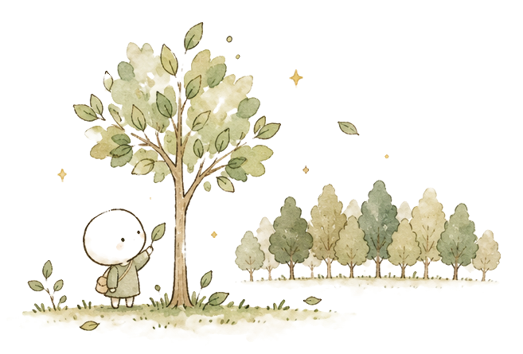
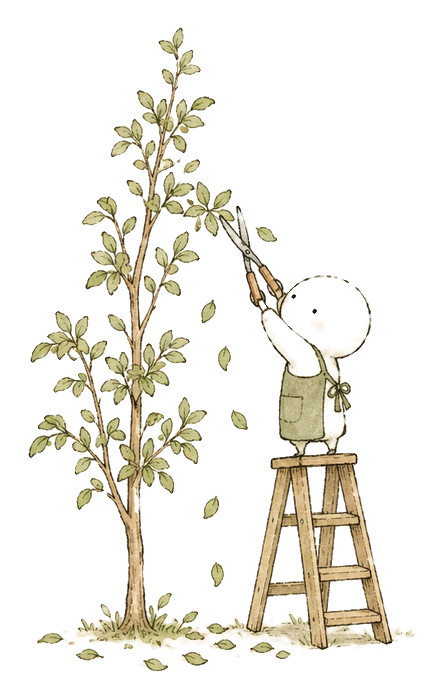
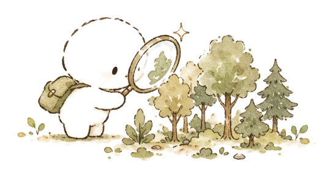

資訊增益（Information Gain）常用於衡量特徵對分類結果的不確定性貢獻程度，並據以進行特徵選擇。此方法主要應用於下列哪一類模型架構中？
正解 D
資訊增益

兩場公告試題：樹模型 4 題（114-2 第 8、18 題；115-1 第 16、28 題）、可解釋性 2 題（114-2 第 14 題；115-1 第 37 題），合計 12 分。
| 看到 | 選 |
|---|---|
| 資訊增益（Information Gain）、基尼不純度（Gini Impurity） | 決策樹的分裂指標 |
| Bootstrap 抽樣＋每次分裂隨機選部分特徵、平行訓練、投票／平均 | 隨機森林（Random Forest）＝ Bagging，降變異（Variance） |
| 逐步修正目前累積模型的殘差（前一階段的誤差）、序列訓練 | 梯度提升（Gradient Boosting）＝ Boosting，降偏差（Bias） |
| 正則化項＋缺失值自動處理＋並行化訓練 | XGBoost 相較傳統 GBDT 的改進 |
| 目標函數加樹的複雜度懲罰項（深度、葉節點數、葉節點權重 L2） | XGBoost 防過擬合的設計 |
| 非線性關係＋要整體特徵重要性供稽核 | 隨機森林迴歸（Random Forest Regression） |
| 要解釋單筆預測的原因 | SHAP；要看整體重視哪些特徵 → 全域特徵重要性 |
| 葉子式生長（Leaf-wise）、更快但較易過擬合 | LightGBM |
| 醫療診斷、貸款核准這類高風險決策，要能說明理由 | 可解釋性最關鍵的情境 |
資訊增益（Information Gain）常用於衡量特徵對分類結果的不確定性貢獻程度，並據以進行特徵選擇。此方法主要應用於下列哪一類模型架構中？
正解 D
資訊增益
下列何者最能同時反映 XGBoost（eXtreme Gradient Boosting）相較於傳統梯度提升決策樹（Gradient Boosting Decision Tree, GBDT）的主要技術改進？
正解 A
XGBoost 比 GBDT 多了什麼
某資料科學家在信用評分任務中使用 XGBoost 建立模型，發現模型在訓練集表現良好但驗證集出現過擬合跡象。他檢視其模型設計，發現 XGBoost 在目標函數（Objective Function）中引入額外的正則化機制以控制模型複雜度。相較於傳統梯度提升決策樹（GBDT），XGBoost 在其核心目標函數中加入了下列哪一種關鍵設計，使其具備更強的防過擬合能力？
正解 A
目標函數正則化
某房仲平台要預測物件成交價，資料集含 50 個特徵，其中部分特徵與房價呈非線性關係，且業務單位要求模型須能提供整體特徵重要性以供稽核。下列哪一種模型選擇策略最符合需求？
正解 B
非線性＋特徵重要性
某團隊發現，單棵決策樹只要訓練資料略有變動，預測結果就明顯改變，因此改用隨機森林（Random Forest）。
下列哪項最能解釋隨機森林改善這種不穩定性的主要機制？
正解 C
A 是 Boosting 的做法（序列修正），不是隨機森林
B 全部一樣＝沒有多樣性，平均了也沒用
C 正解：兩種隨機降低樹之間的相關性，平均後變異才降得下來
D 深度 1 的樹是弱學習器，提高偏差不是隨機森林的目的
某資料科學團隊使用 5-Fold Cross-Validation 比較兩個迴歸模型，得到以下結果：
| 模型 | 訓練 RMSE | 驗證 RMSE |
|---|---|---|
| 模型 A | 4.2 ± 0.3 | 12.8 ± 3.6 |
| 模型 B | 9.1 ± 0.4 | 10.2 ± 0.7 |
模型 A 為高複雜度的梯度提升樹，模型 B 為加入 L2 正則化的線性迴歸。
進一步分析發現：
- 模型 A 在不同 Fold 間的預測表現差異明顯。
- 模型 B 的訓練與驗證誤差較接近。
- 資料中存在非線性關係，且部分特徵高度相關。
- 目前無法取得額外訓練資料。
若希望改善泛化能力，同時保留捕捉非線性關係的能力，下列哪個策略最合理？

正解 C
1. 看診斷：訓練 4.2、驗證 12.8，差距大；±3.6 代表 Fold 之間跳動大 → 高變異（過擬合）
2. 高變異要做的事：讓模型「少背一點」＝降複雜度
3. 樹模型降複雜度的三個旋鈕：降 max_depth、提高 min_samples_leaf、加正則化；調完用交叉驗證確認
A「必然優於」是絕對化字眼；題目要求保留非線性，線性迴歸做不到
B 加深、加迭代＝更會背，方向相反
C 正解
D 學習率變小只是每步走小一點，不「保證」降變異；而且學習率縮小通常要配合增加迭代次數
下列哪一項最能描述 Random Forest 與 Boosting 的差異？
正解 B
| Bagging（隨機森林） | Boosting（GBDT／XGBoost／LightGBM） | |
|---|---|---|
| 怎麼訓練 | 平行，各樹獨立 | 序列，每棵修正目前累積結果的殘差 |
| 主要降什麼 | 變異（Variance） | 偏差（Bias） |
| 最後怎麼合 | 投票／平均 | 加權相加 |
| 誰比較準 | 看資料、看驗證結果，沒有一定 | 同左 |
A 兩者都是多棵樹，不是單棵
B 正解，一句話同時抓到兩者差異
C AdaBoost、XGBoost 都能做分類
D「一定」是警訊；誰準要用驗證結果判斷
Feature Importance
給稽核，說明模型整體重視哪些特徵。
115-1 第 28 題
非線性＋要整體特徵重要性供稽核，選哪個模型
Random Forest Regression
SHapley Additive exPlanations
給客戶、給監管，說明單筆預測原因。
某銀行導入 AI 貸款審核系統，監管要求每筆被拒絕的申請須提供可理解的拒絕原因。技術主管評估以下方案，哪一種最能實現個別預測的局部可解釋性（Local Explainability）？
正解 A
SHAP 計算每個特徵對單筆預測的貢獻。

Bagging 降變異，Boosting 降偏差
XGBoost ＝ 正則化 ＋ 缺失值自動處理 ＋ 並行化
要稽核整體看特徵重要性，要解釋單筆用 SHAP
| 決策樹（Decision Tree） | 隨機森林（Random Forest） | |
|---|---|---|
| 結構 | 一棵樹，遞迴分裂 | 多棵樹，Bootstrap 抽樣＋隨機選特徵 |
| 解釋性 | 高，規則看得到 | 較低，但有特徵重要性 |
| 過擬合 | 容易 | 抗過擬合能力強 |
| 防過擬合 | 剪枝（max_depth、min_samples_leaf） | 多數決／平均 |
| 要不要特徵縮放 | 不需要 | 不需要 |
| Bagging | Boosting | |
|---|---|---|
| 訓練方式 | 平行，各模型獨立 | 序列，修正前一輪錯誤 |
| 重點降低 | 變異（Variance） | 偏差（Bias） |
| 代表 | Random Forest | Gradient Boosting、XGBoost、LightGBM |
| 整合方式 | 投票（分類）／平均（迴歸） | 加權整合 |
決策樹分裂指標：基尼不純度（Gini Impurity），值越小越純；資訊增益（Information Gain），衡量熵（Entropy）下降；分類誤差（Classification Error）。
XGBoost 相較傳統梯度提升決策樹（GBDT）：Block 結構加速、自動學習缺失值走向、L1／L2 正則化（Regularization）。
LightGBM：葉子式生長（Leaf-wise），通常更快，但較易過擬合。
當使用決策樹（DecisionTreeClassifier）進行訓練時，若宣告模型時什麼參數都不加，會產生什麼後果？又該由什麼參數去修剪？
from sklearn.tree import DecisionTreeClassifier
model = DecisionTreeClassifier()正解 B
不設 max_depth 預設是 None，容易背下訓練集；min_depth 是虛構參數。樹模型不需要特徵縮放。
在進行 GradientBoosting 或 XGBoost 系列集成模型的優化調整時，若為了避免過度擬合，強制調小了每次迭代學習步伐 learning_rate，另一個參數該做何對應變動以維持模型動能？
from sklearn.ensemble import GradientBoostingClassifier
# 若從 learning_rate=0.1 縮減十倍至 0.01，
# 右側參數 n_estimators 原本為 100，最好該調整為？
model = GradientBoostingClassifier(learning_rate=0.01,
n_estimators=_________)正解 C
學習率縮小，通常要更多棵樹；1000 是本題配對方向，最佳數量仍須驗證，並非收斂或降變異保證。
決策樹與隨機森林（Random Forest）經過 fit() 之後，可以告訴你哪些特徵是做出判斷的最大關鍵。在腳本中，要去哪裡提取這個「特徵重要性」陣列？
from sklearn.ensemble import RandomForestClassifier
rf = RandomForestClassifier()
rf.fit(X_train, y_train)
importances = rf.___________________________正解 C
feature_importances_ 依分裂降低的不純度加總；coef_ 屬線性模型。XGBoost、LightGBM 的重要性定義可選。
在隨機森林中，隨機性來源於哪兩個方面？
正解 A
Bootstrap 抽樣選樣本，每次分裂只看部分特徵。